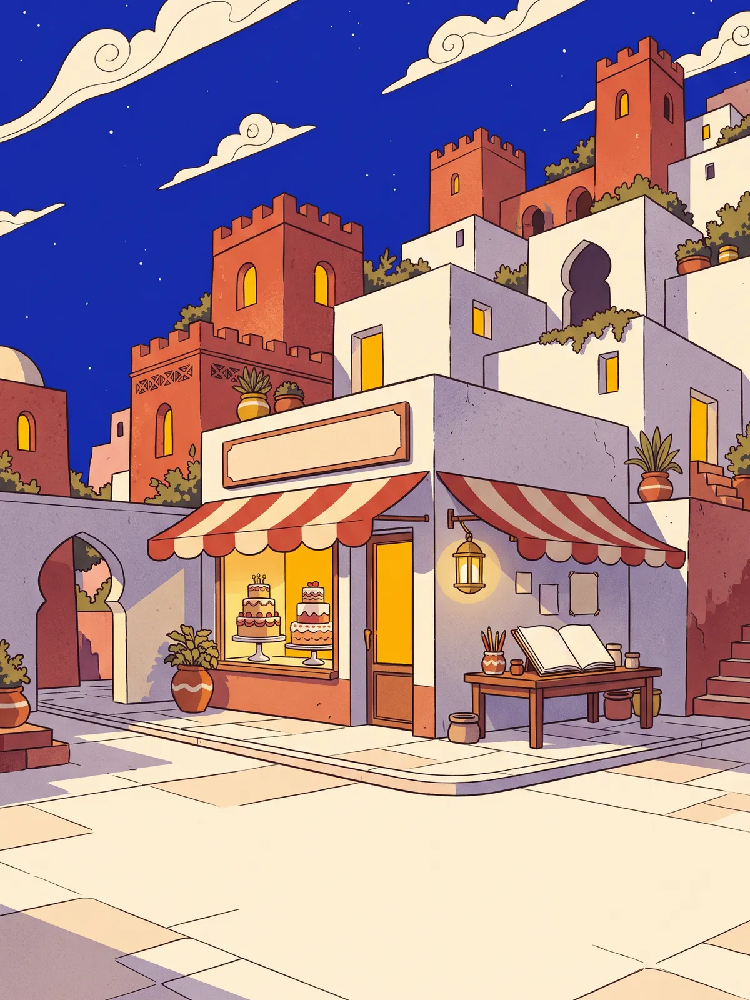
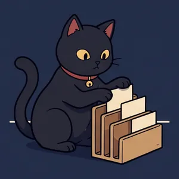
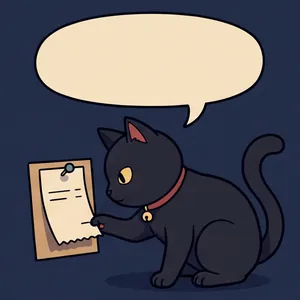
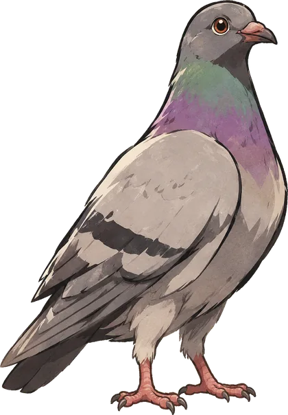
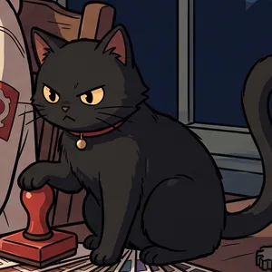
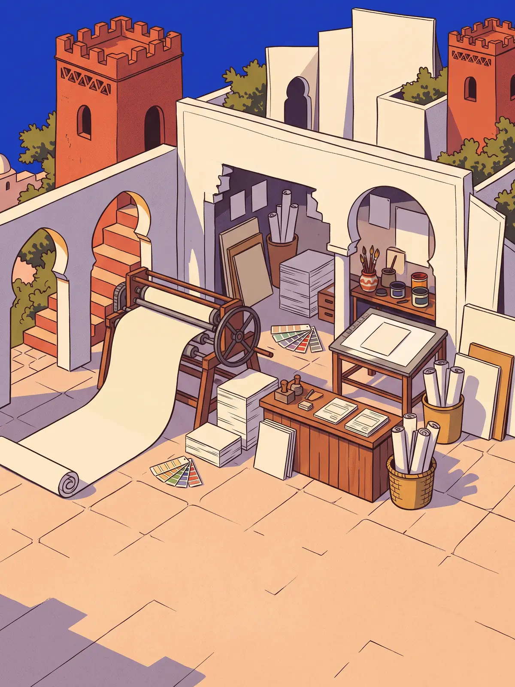
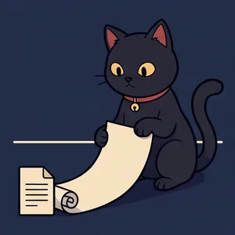
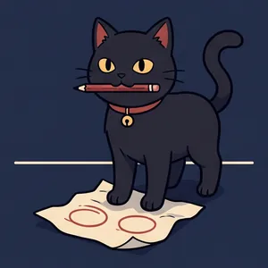
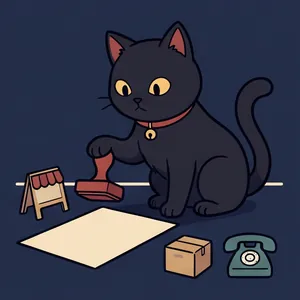
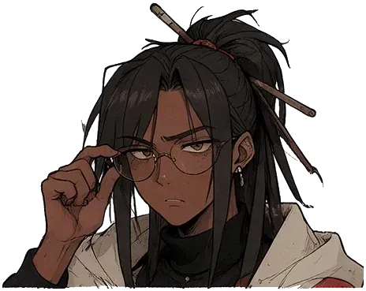

/ COURS CLIENT · LA MARQUE, AVANT LE LOGO
Le logo vient après.
Un logo payé deux fois coûte plus cher qu’une heure de réflexion. Neuf étapes, et vous saurez quoi demander avant de payer un designer : vos réponses remplissent une fiche qui part au studio à la fin, si vous le voulez.
Chez la Pâtisserie Hodna · exemple inventé
Ouvrir l’atlas
Choisir un quartier
Les quartiers
0 quartier fait sur 9
Chez la Pâtisserie Hodna · exemple inventé ·
Le logo n’est pas la marque



Le dossier · Acte I · 1 / 9
Couches
Le logo n’est pas la marque · avec Kūro
Nadia tient la Pâtisserie Hodna, à Bordj Bou Arréridj. Son neveu a dessiné le logo en une soirée ; elle ouvre une deuxième boutique avant Ramadan et veut « un logo plus pro ». Elle range ce qu’elle a : un logo, rien d’autre. Le garder ou le refaire ? Elle coche « je ne sais pas » : l’étape 5 l’aidera.
La règle
Un logo est un signe : la marque, l’identité et leurs règles se décident avant lui.

Faire l’exercice de terrainL’exercice de terrain
Trier les lignes
Placez chaque ligne dans une case : la raison de l’atelier s’affiche sous chacune. L’exercice est fait quand toutes sont placées.
On vous livre un logo, et rien ne change : c’est qu’un logo n’est qu’un signe. Autour de lui, il y a l’identité (couleurs, lettres, images), le système (les règles qui la gardent cohérente) et la marque : ce qu’on dit de vous quand vous n’êtes pas là. Pour le Design Council, l’organisme britannique du design, « votre marque est plus qu’un logo » : rangez d’abord ce que vous avez.
Ranger quatre éléments dans les quatre couches
-
Le symbole et le nom dessinés
-
La palette de couleurs
-
La règle « jamais le logo sur fond rouge »
-
Ce que vos clients racontent à leurs amis
Notre avis d’atelier Ce classement est celui de notre atelier : c’est ainsi que nous découpons le travail.
Ce que vous avez déjà
Votre logo actuel
Pas sûr ? L’étape 5 vous laisse voir votre propre logo à 16 pixels.
Les sources du cours [1]
Le logo n’est pas la marque · Un logo seul est un signe ; le reste se décide avant.

Le dossier · Acte I · 2 / 9
Public
Pour qui ? · avec Techno Pigeon
Sa cliente : une mère qui commande le gâteau d’un mariage. Ce qu’elle veut obtenir : le gâteau de la photo, à l’heure. Elle trouve la pâtisserie par le bouche-à-oreille et les réseaux sociaux. Ce qui la fait hésiter : « est-ce que ce sera comme sur la photo ? »
La règle
Une piste se juge contre la personne de la fiche, pas au goût.

L’exercice de terrain
Remplir sa case de la fiche
Répondez pour vous : chaque réponse remplit sa case de la fiche, sur cet appareil seulement. Une réponse suffit pour faire l’exercice ; rien n’est obligatoire.
« Tout le monde » n’est pas un public, et un logo fait pour tout le monde ne parle à personne. Le Design Council place le public visé dans tout brief (le document qui présente le projet au designer). Décrivez une personne : ce qu’elle veut obtenir, où elle vous trouve, ce qui la fait hésiter.
Qui achète ?
Où vous trouve-t-on ?
LA PERSONNE
- Qui
- à remplir
- Veut
- à remplir
- Nous trouve
- à remplir
- Hésite
- à remplir
Pour qui ? · Choisir la piste qui parle à la personne de ma fiche.

Le dossier · Acte I · 3 / 9
Promesse
La promesse et la preuve · avec Raven
Nadia écrit d’abord « la meilleure qualité » : le compteur répond « slogan ». Elle réécrit : « votre gâteau prêt à l’heure promise », et sa preuve : « une photo de chaque commande, envoyée avant la livraison ». La grille lui rend sa phrase : la première qu’une cliente peut vérifier.
La règle
Une promesse compte si un client peut la vérifier : un délai, un fait, une preuve.

Faire l’exercice de terrainL’exercice de terrain
Remplir sa case de la fiche
Répondez pour vous : chaque réponse remplit sa case de la fiche, sur cet appareil seulement. Une réponse suffit pour faire l’exercice ; rien n’est obligatoire.
« La meilleure qualité » : vos concurrents le disent aussi. Une promesse dit ce que le client obtient chez vous ; une preuve la rend croyable : un délai écrit, un chiffre à montrer, un avis signé. Chez nous, un brief commence par là : c’est notre méthode, pas une règle.
Par exemple : « des gâteaux de commande prêts à l’heure dite, ou remboursés » ; « un devis écrit qui ne bouge pas, pose comprise ». Ce sont des exemples, pas des phrases à recopier.
La règle de l’atelier : chaque adjectif se remplace par un fait qu’un client peut constater.
Ce qui le prouve
Votre positionnement, en une grille
- Public
- à remplir
- Besoin
- à remplir
- Promesse
- à remplir
- Preuve
- à remplir
La grille vient de notre atelier : public, besoin, promesse, preuve. La phrase en dessous part dans votre fiche.
La promesse et la preuve · Une promesse qui se vérifie, avec sa preuve.

Le dossier · Acte I · 4 / 9
Caractère
Le caractère · avec Kūro
Ses curseurs : plutôt animée, très fait main, plutôt claire. Ses trois mots : généreuse, soignée, de fête. Elle ne dit pas « je veux du rose » : elle dit ce qu’on doit ressentir.
La règle
Au designer, on dit le but, ce qu’on doit ressentir ; il choisit les moyens.

L’exercice de terrain
Remplir sa case de la fiche
Répondez pour vous : chaque réponse remplit sa case de la fiche, sur cet appareil seulement. Une réponse suffit pour faire l’exercice ; rien n’est obligatoire.
« Je veux du bleu » : et le designer n’a plus rien à chercher. Le Design Council conseille de décrire le but, pas la solution. Dites ce qu’on doit ressentir, avec trois curseurs : il choisit les moyens.
·
·
·
Le plus proche parmi nos trois identités
AlmaFlowClim
tr4veler.exe
Numidea Labs
Ce sont trois identités faites dans cet atelier : elles montrent une ambiance, pas ce que vous recevrez. Votre identité part de votre fiche.
Deux suffisent, si vous dites pourquoi : c’est le « pourquoi » qui sert au designer.
Les sources du cours [3]
Le caractère · Dire ce qu’on doit ressentir, pas la couleur ni la police.


Le dossier · Acte I · 5 / 9
Petit format
Tenir à 16 pixels · avec Kūro
Nadia charge le logo de son neveu : à 16 pixels, les lettres fines disparaissent. Elle tient sa réponse de l’étape 1 : ce logo, elle le fait refaire, avec une version compacte.
La règle
Une marque est une famille : la petite version se dessine, elle ne se réduit pas.

Faire l’exercice de terrainL’exercice de terrain
Le test des 16 pixels
Réduisez les deux marques jusqu’à 16 pixels, la taille d’un onglet. Votre propre logo peut s’y ajouter : il est lu ici et envoyé nulle part.
Votre logo est beau sur l’enseigne, et illisible dans l’onglet du navigateur. Faites glisser jusqu’à 16 pixels : les traits fins disparaissent, la silhouette compacte reste. Chez nous, une identité se livre en famille, du logo complet à la version en une seule encre : c’est notre méthode d’atelier, pas une règle.
·
À taille réelle, 16 px
Deux marques dessinées pour l’exercice : ni la nôtre, ni celle d’un client.
Le fichier reste sur cet appareil : il n’est ni envoyé ni gardé.
Une famille de logo (notre méthode)
- 16 px La silhouette seule
- 48 px La marque compacte
- 240 px Le logo complet, avec le nom
- Une encre Des formes pleines, une seule couleur
Où votre marque doit tenir en petit
Tenir à 16 pixels · Une version compacte en formes pleines, vue à 16 pixels.

Le dossier · Acte II · 6 / 9
Fichiers
Ce que vous recevez · avec Techno Pigeon
Pour la deuxième boutique, l’imprimeur lui demande le logo pour une bâche de 3 mètres. Elle n’a qu’un JPEG : elle note qu’il lui faut le vectoriel et les versions.
La règle
Pour imprimer en grand, il faut le fichier vectoriel : il reste net à toutes les tailles.

L’exercice de terrain
Lire chaque explication
Ouvrez chaque explication une fois. L’exercice est fait quand vous les avez toutes lues.
L’exercice de terrain
Lire chaque explication
Ouvrez chaque explication une fois. L’exercice est fait quand vous les avez toutes lues.
Votre imprimeur demande le logo pour une bâche de 3 mètres, et vous n’avez qu’un JPEG. Une identité, ce sont des fichiers, et chacun sert à quelque chose. Ouvrez-les un par un : ce sont ceux à retrouver dans toute proposition.
À quoi sert chaque fichier
Le vectoriel (SVG, PDF)Un dessin fait de formes, pas de points : pour l’imprimeur, l’enseigne, la bâche. Selon la documentation de référence du web (MDN), une image vectorielle SVG se rend à toutes les tailles sans perte de qualité, contrairement à un PNG ou un JPEG.
Le PNG transparentUne image sans fond, pour poser le logo sur un document ou une photo. C’est une image en pixels : chez nous, on la livre assez grande pour l’écran, et on garde le vectoriel pour le reste.
Les versionsCouleur, une seule couleur, noir, blanc ; en long et en carré. Chez nous, c’est ce qui évite de déformer le logo pour le faire tenir quelque part.
La charteLe livret des règles : tailles, marges, couleurs, ce qui est interdit. Il permet à quelqu’un d’autre de faire un visuel cohérent sans vous appeler. Une charte complète donne aussi un rôle à chaque couleur (texte, fond, accent, alerte) et un ordre de lecture (titre, détails, action) : c’est notre liste. Les règles d’accessibilité du W3C (WCAG 2.2) demandent un contraste minimal entre un texte et son fond : demandez un rôle par couleur, et un texte qui reste lisible.
Les polices et leurs licencesUne police a une licence. La SIL OFL, une licence libre pour les polices, permet selon sa propre FAQ de l’utiliser pour un logo et à l’impression. Pour une police payante, demandez qui détient la licence et ce qu’elle couvre.
Les droits, par écritLe guide de l’OMPI (l’Organisation mondiale de la propriété intellectuelle) et de l’INAPI pour l’Algérie (2004) le rappelle : le créateur d’un logo est d’abord titulaire du droit d’auteur ; il conseille de régler ce point dans l’accord initial, ou de faire céder officiellement le droit à votre entreprise. En France, selon le code de la propriété intellectuelle, chaque droit cédé doit être nommé dans l’acte : demandez la cession par écrit.
Le master de campagne et ses formatsUn fichier maître en calques séparés (le fond, le sujet, le texte), puis les formats qui en sortent, par exemple un carré, une story verticale, une bannière. Chez nous, on garde le master et l’on change ce que le cadre montre ; une page de règles dit ce qui peut bouger et ce qui ne bouge pas.
Ce que vous recevez · Demander le vectoriel (SVG ou PDF) et les versions.
Le dossier · Acte II · 7 / 9
Proposition
Lire une proposition · avec Raven
On lui propose ailleurs : « logo en un jour, JPEG, tout compris ». Elle marque trois lignes « à demander » : les fichiers vectoriels, la liste de ce qui est livré, les droits par écrit.
La règle
« Tout compris » ne se vérifie qu’avec la liste écrite de ce qui est livré.

Faire l’exercice de terrainL’exercice de terrain
Trier les lignes
Placez chaque ligne dans une case : la raison de l’atelier s’affiche sous chacune. L’exercice est fait quand toutes sont placées.
« Tout compris », dit le devis ; et vous ne savez pas ce que « tout » contient. Le Design Council conseille de demander « M’avez-vous indiqué tous les coûts ? » et « Quand la propriété du design nous revient-elle ? ». Triez ces huit lignes : celles que vous marquez « à demander » deviennent vos demandes écrites dans la fiche.
-
« Logo livré en JPEG, un fichier. »
-
« Trois questions sur vos clients avant de dessiner. »
-
« Prix : tout compris. » Sans liste.
Chez nous : l’identité de base comprend le logo (complet, compact et en une seule encre), les couleurs, la typographie et le ton de voix. Le « Kit graphique complet » ajoute la charte, des composants réutilisables, le kit réseaux sociaux animé et le master de campagne.
-
Rien sur les droits.
Chez nous : une fois le projet payé, vous recevez les sources vectorielles et une cession des droits écrite, qui nomme l’usage, le lieu et la durée. Nous gardons le droit de montrer le travail.
-
« Polices sous licence OFL, utilisables pour le logo. »
Chez nous : les polices et les photos suivent les conditions de leur propre licence.
-
« Un logo livré en un jour, sans aucune question sur vos clients. »
-
« Calendrier : brief, pistes, choix, finitions, livraison, avec une date chacun. »
Chez nous : deux premières pistes, puis trois séries de retouches à chaque étape.
-
« Couleurs : bleu nuit et corail. » Sans rôle ni contraste.
Lire une proposition · Demander par écrit la liste de ce qui est livré.


Le dossier · Acte II · 8 / 9
Nom
Le nom, et à qui il est · avec Raven
Le nom : « Hodna ». Le pays du dépôt : l’Algérie, donc l’INAPI. Sur l’enseigne, elle veut l’arabe et le latin : elle coche les deux écritures.
La règle
Un logo payé n’est pas une marque déposée : le dépôt se fait à part, pays par pays.

L’exercice de terrain
Remplir sa case de la fiche
Répondez pour vous : chaque réponse remplit sa case de la fiche, sur cet appareil seulement. Une réponse suffit pour faire l’exercice ; rien n’est obligatoire.
Votre logo est dessiné et payé : il n’est pas encore protégé comme marque. Une marque se dépose, pays par pays, auprès de l’office national, ou par le système de Madrid que gère l’OMPI. Choisissez un pays pour voir à qui demander et ce que disent les textes officiels.
Écritures sur l’enseigne
Chaque écriture se dessine : dites-le avant le devis.
Choisissez le pays du dépôt : sa carte s’affiche, et la fiche le note.
L’office est l’INAPI ; une marque dure dix ans, renouvelables. Selon la fiche de l’INPI sur l’Algérie (juin 2025), l’INAPI examine lui-même si le nom est libre, et un déposant sans domicile en Algérie passe par un mandataire (quelqu’un qui dépose en son nom). Les taxes sont sur la page de l’INAPI : vérifiez-les le jour du dépôt.
Selon la même fiche, aussi : l’enregistrement prend environ deux ans en moyenne, une marque inutilisée plus de trois ans se perd, et les noms en .dz sont réservés aux entités établies en Algérie ou aux titulaires d’une marque valable en Algérie.
L’office est l’INPI. Une marque dure dix ans, renouvelables sans limite, et doit être utilisée. Barème de l’INPI applicable au 2 juillet 2026 : dépôt 190 € pour une classe (une catégorie de produits ou de services), 40 € par classe en plus, renouvellement 290 € pour une classe. La recherche d’antériorité d’un logo par l’INPI (la recherche des marques déjà déposées qui lui ressemblent) coûte 532 € pour une classe.
Le dépôt se fait auprès du ministère de l’Économie et du Tourisme. Sa page indique 750 AED pour la demande, 750 AED pour la publication et 5 000 AED pour l’enregistrement, soit 6 500 AED, puis 30 jours d’opposition après publication. Un propriétaire étranger passe par un mandataire (quelqu’un qui dépose en son nom).
L’OMPI renvoie vers chaque office national, et vers le système de Madrid pour plusieurs pays en une demande. La question à poser à l’office : ce nom est-il libre dans ma classe (ma catégorie de produits ou de services) ?
Où en est votre nom
La liste vient du guide de l’OMPI et de l’INAPI : facile à lire, à dire et à retenir, sans sens malheureux dans vos langues, domaine vérifié.
Chez nous, le Studio l’écrit à côté de son calculateur : Notre prix comprend la conception sur mesure, des fichiers et un code qui vous appartiennent une fois le projet payé, un seul interlocuteur du premier appel à la livraison, et 30 jours de corrections ensuite.
Et pour une identité, une fois payée : les sources vectorielles et une cession des droits écrite (usage, lieu et durée nommés) ; nous gardons le droit de montrer le travail ; les polices et les photos suivent leur propre licence.
Les sources du cours [5] [6] [7] [8] [9] [10] [11] [12] [13]
Le nom, et à qui il est · Déposer le nom à l’INAPI pour l’Algérie.

Le dossier · Acte II · 9 / 9
Fiche
La fiche · avec Kūro
Sa fiche : enseigne, emballage, réseaux sociaux ; l’emballage d’abord ; une date précise, avant Ramadan ; c’est elle qui décide. Sa fiche terminée est sous la vôtre.
La règle
Avant le premier appel : la fiche remplie, et une seule personne qui décide.

Faire l’exercice de terrainL’exercice de terrain
Remplir sa case de la fiche
Répondez pour vous : chaque réponse remplit sa case de la fiche, sur cet appareil seulement. Une réponse suffit pour faire l’exercice ; rien n’est obligatoire.
Dernières cases : où votre marque va vivre, pour quand, avec quel budget. La fiche fait le compte avec nos prix publiés ; rien ne part tant que vous n’appuyez pas.
Où votre marque va vivre
Chaque endroit est un « support » : un endroit où la marque apparaît (enseigne, boîte, page…). Nos prix d’identité se comptent en supports.
Le plus important d’abord
Si le budget ne couvre pas tout, c’est par là qu’on commence.
En plus
L’identité de base : le logo (complet, compact, une encre), les couleurs, la typographie, le ton de voix. Deux premières pistes, puis trois séries de retouches par étape.
contient : la charte, des composants réutilisables, le kit réseaux sociaux animé, le master de campagne et ses formats.
Notre avis d’atelier Notre avis : si quelqu’un d’autre fera vos visuels ensuite, le kit graphique complet évite qu’il réinvente la marque.
Le calcul compte un support par endroit coché. Ce qui compte pour un support se confirme au cadrage.
Pour quand ?
Votre budget, par rapport à cette fourchette
Après la livraison, qui s’en occupe ?
Rythme
L’estimation montre alors les semaines raccourcies.
NUMIDEA LABSFICHE DE MARQUE

Sans JavaScript, la fiche ne se remplit pas : imprimez cette page, répondez à la main, ou écrivez-nous sur WhatsApp.
- Activité
- Existant
- J’ai déjà
- Logo actuel
- Pour qui
- Promesse
- Preuve
- Positionnement
- Caractère
- Trois mots
- Marques que j’aime
- Doit tenir en petit
- Supports
- D’abord
- Réseaux sociaux
- En plus
- Nom
- Écritures
- Pays du dépôt
- Où en est le nom
- Ce que je demanderai par écrit
- Pour quand
- Budget
- Plafond
- Qui décide
- Après la livraison
- Rythme
Le texte brut
Vos réponses restent sur cet appareil. Rien n’est envoyé tant que vous n’appuyez pas sur un bouton.

Yasser, au studio : Nous revenons le jour ouvré suivant. Du dimanche au jeudi, 9h–18h. Avec nos questions, puis un périmètre écrit et un prix ferme dès que le cadrage est validé ensemble. Pas une fourchette, un chiffre. Bordj Bou Arréridj · AlgérieLa fiche de Nadia, terminée exemple inventé
- Activité : pâtisserie, Bordj Bou Arréridj
- Logo actuel : je le refais
- Positionnement : Pour des particuliers. Ce qu’ils veulent : le gâteau de la photo, à l’heure. Notre promesse : votre gâteau prêt à l’heure promise. La preuve : une photo de chaque commande, envoyée avant la livraison.
- Caractère : plutôt animée · très fait main · plutôt claire
- Écritures : arabe, latin
- Supports : (3) Enseigne, Emballage, Réseaux sociaux · D’abord : l’emballage
- Ce que je demanderai par écrit : les fichiers SVG/PDF et toutes les versions du logo · la liste écrite de ce qui est livré · la cession des droits par écrit
- Pour quand : avant Ramadan · Qui décide : Nadia, la gérante
Les sources du cours [4]
La fiche · Garder la fiche sous la main, et une personne qui décide.
La Lanterne · librairie inventée
Le journal de bord
0 / 9 note
Faites un quartier jusqu’au bout, la situation puis l’exercice, pour inscrire la décision de l’équipe au journal.
Acte I · Ce que vous voulez
- Le logo n’est pas la marque
Nadia sait ce qu’elle a : un logo, rien d’autre. Reste à savoir pour qui elle le refait.
Un logo seul est un signe ; le reste se décide avant.
Faites ce quartier pour l’inscrire au journal.
- Pour qui ?
Sa cliente a un visage ; il lui faut maintenant une promesse qu’elle peut vérifier.
Choisir la piste qui parle à la personne de ma fiche.
Faites ce quartier pour l’inscrire au journal.
- La promesse et la preuve
La promesse tient ; reste à dire au designer ce qu’on doit ressentir.
Une promesse qui se vérifie, avec sa preuve.
Faites ce quartier pour l’inscrire au journal.
- Le caractère
Le caractère est dit ; Nadia essaie maintenant son logo dans un onglet de navigateur.
Dire ce qu’on doit ressentir, pas la couleur ni la police.
Faites ce quartier pour l’inscrire au journal.
- Tenir à 16 pixels
Le logo sera refait, avec une version compacte ; l’imprimeur demande déjà le fichier de la bâche.
Une version compacte en formes pleines, vue à 16 pixels.
Faites ce quartier pour l’inscrire au journal.
Acte II · Ce que vous achetez
- Ce que vous recevez
Elle sait quels fichiers réclamer ; une proposition arrive, « tout compris ».
Demander le vectoriel (SVG ou PDF) et les versions.
Faites ce quartier pour l’inscrire au journal.
- Lire une proposition
La proposition est lue ; reste le nom, et à qui il est.
Demander par écrit la liste de ce qui est livré.
Faites ce quartier pour l’inscrire au journal.
- Le nom, et à qui il est
Le nom a son pays de dépôt ; il reste à tout réunir sur la fiche.
Déposer le nom à l’INAPI pour l’Algérie.
Faites ce quartier pour l’inscrire au journal.
- La fiche
La fiche de Nadia est prête à partir, quand elle le voudra.
Garder la fiche sous la main, et une personne qui décide.
Faites ce quartier pour l’inscrire au journal.
Le sac · inventaire
Le sac
0 souvenir sur 9
Chaque quartier fait ajoute un souvenir au sac. Vos progrès restent dans ce navigateur, s’il les garde ; rien ne part d’ici.
Acte I · Ce que vous voulez
- CouchesLa case « Couches »Souvenir pas encore gagné
- PublicLa case « Public »Souvenir pas encore gagné
- PromesseLa case « Promesse »Souvenir pas encore gagné
- CaractèreLa case « Caractère »Souvenir pas encore gagné
- Petit formatLa case « Petit format »Souvenir pas encore gagné
Acte II · Ce que vous achetez
- FichiersLa case « Fichiers »Souvenir pas encore gagné
- PropositionLa case « Proposition »Souvenir pas encore gagné
- NomLa case « Nom »Souvenir pas encore gagné
- FicheLa case « Fiche »Souvenir pas encore gagné
Neuf sur neuf. Le dessin de Kūro qui tamponne votre fiche est à vous, au format A4. Compléter ma fiche →
Télécharger le dessin
Les sources du cours
Les sources du cours (17)
Les conseils pour commander un design viennent du Design Council ; les règles de marque, des offices (INAPI, INPI, ministère émirien, OMPI) ; les droits, des textes cités. Les classements, la méthode promesse et preuve, et les exemples de l’atelier sont notre pratique, et le cours le dit. Rien ici n’est un conseil juridique. La grille de positionnement, la famille de logo et le test des 16 pixels sont notre méthode ; la règle de contraste vient du W3C. La Pâtisserie Hodna est un exemple inventé.
- Design Council (UK). How to commission a designer, step 1: Prepare yourself. designcouncil.org.uk(nouvel onglet)
- Design Council (UK). How to commission a designer, step 3: Choose a designer. designcouncil.org.uk(nouvel onglet)
- Design Council (UK). How to commission a designer, step 4: Brief your designer. designcouncil.org.uk(nouvel onglet)
- Design Council (UK). How to commission a designer, step 5: Manage the project. designcouncil.org.uk(nouvel onglet)
- WIPO. Trademarks. wipo.int(nouvel onglet)
- INPI. Les différents types de marque. inpi.fr(nouvel onglet)
- INPI. Tarifs applicables au 2 juillet 2026 (redevances). inpi.fr(nouvel onglet)
- INPI. Tarifs des prestations applicables au 2 juillet 2026. inpi.fr(nouvel onglet)
- INPI. Fiche « La propriété intellectuelle en Algérie », juin 2025. inpi.fr(nouvel onglet)
- INAPI. Qu’est-ce qu’une marque ? inapi.dz(nouvel onglet)
- INAPI. Taxes relatives aux marques (page sans date : vérifier le jour du dépôt). inapi.dz(nouvel onglet)
- OMPI et INAPI. Créer et développer une marque en Algérie (guide pour les PME). wipo.int(nouvel onglet)
- UAE Ministry of Economy and Tourism. Trademark Registration. moet.gov.ae(nouvel onglet)
- Légifrance. Code de la propriété intellectuelle, article L131-3. legifrance.gouv.fr(nouvel onglet)
- SIL. OFL-FAQ (Open Font License). openfontlicense.org(nouvel onglet)
- W3C WAI. Understanding SC 1.4.3: Contrast (Minimum), WCAG 2.2. w3.org(nouvel onglet)
- MDN Web Docs. SVG: Scalable Vector Graphics. developer.mozilla.org(nouvel onglet)
La Librairie
Votre fiche est le début d’une identité. Le Studio la dessine. Voir le travail de marque au Studio →
Avant d’acheter : le web3